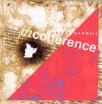

| Artist: | Peter Hammill |
| Title: | Incoherence |
| Label: | Fie! FIE 9129 |
| Length(s): | 42 minutes |
| Year(s) of release: | 2004 |
| Month of review: | [08/2004] |
| 1) | When Language Corrodes | 2.46 |
| 2) | Babel | 4.37 |
| 3) | Logodaedalus | 2.18 |
| 4) | Like Perfume | 1.32 |
| 5) | Your Word | 1.09 |
| 6) | Always And A Day | 2.09 |
| 7) | Cretans Always Lie | 3.25 |
| 8) | All Greek | 4.14 |
| 9) | Call That A Conversation? | 3.14 |
| 10) | The Meanings Changed | 1.57 |
| 11) | Converse | 2.10 |
| 12) | Gone Ahead | 5.40 |
| 13) | Power Of Speech | 2.42 |
| 14) | If Language Explodes | 3.46 |
On this album Hammill brought in both Jackson and Gordon, creating more of a band feel -musically- than he did on previous albums. Apart from that his own guitars are sharper, as are his vocals. The saxes and violins add to the intensity, both in how extreme some tracks sound as in emotion. The doubled vocals we've heard quite often in the past years, a little too often in my opinion, are less present on this album.
The conceptual approach is felt musically just as much as lyrically: we do not get an alternation of slower and faster tracks. Initially we get a lot of songs that have a sense of urgency about them, pressing in on to the listener. As the album progresses it slowly grows more tranquil in such tracks as Call That A Conversation? and The Meanings Changed. Even though Hammill in the notes refers to the songs being finitely bound (and therefore incoherent), more often than not we do float from one to the next without a pause, the tracks bridged together. This further ensures consistence.